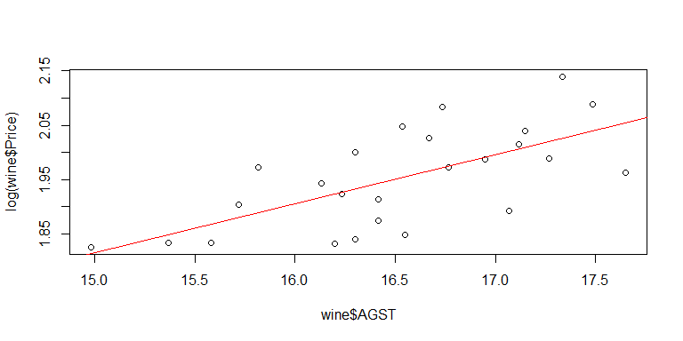

Linear regression - Predicts an outcome variable, aka. dependent variable - Predicts using a set of input variables, aka. independent variables
wine = read.csv("../data/wine.csv")
str(wine)## 'data.frame': 25 obs. of 7 variables:
## $ Year : int 1952 1953 1955 1957 1958 1959 1960 1961 1962 1963 ...
## $ Price : num 7.5 8.04 7.69 6.98 6.78 ...
## $ WinterRain : int 600 690 502 420 582 485 763 830 697 608 ...
## $ AGST : num 17.1 16.7 17.1 16.1 16.4 ...
## $ HarvestRain: int 160 80 130 110 187 187 290 38 52 155 ...
## $ Age : int 31 30 28 26 25 24 23 22 21 20 ...
## $ FrancePop : num 43184 43495 44218 45152 45654 ...Predict price based on one variable AGST
AGST = Average Growing Season Temperature
wine = read.csv("../data/wine.csv")
model1 = lm(Price ~ AGST, data=wine)
summary(model1)
##
## Call:
## lm(formula = Price ~ AGST, data = wine)
##
## Residuals:
## Min 1Q Median 3Q Max
## -0.78450 -0.23882 -0.03727 0.38992 0.90318
##
## Coefficients:
## Estimate Std. Error t value Pr(>|t|)
## (Intercept) -3.4178 2.4935 -1.371 0.183710
## AGST 0.6351 0.1509 4.208 0.000335 ***
## ---
## Signif. codes: 0 '***' 0.001 '**' 0.01 '*' 0.05 '.' 0.1 ' ' 1
##
## Residual standard error: 0.4993 on 23 degrees of freedom
## Multiple R-squared: 0.435, Adjusted R-squared: 0.4105
## F-statistic: 17.71 on 1 and 23 DF, p-value: 0.000335R model summary outputs 5 columns
Coefficient estimate \(\beta\)
standard error: measure of how much the coefficient is likely to vary from the estimate value.
t value is the estimate divided by the standard error. Larger absolute value indicate more significance of the variable.
Probability value: Plausibility of the estimate
Significance by indicated by up to 3 stars
\[ y^i = \beta_0 + \beta_1 x^i + \epsilon^i \]
\(y^i\) dependent variable (price) for the ith observation
\(x^i\) independent variable (AGST) for the ith observation
\(\epsilon^i\) error term for the ith observation
\(\beta_0\) intercept coefficient
\(\beta_1\) regression coefficient for the independent variable
The best model makes the smallest errors
\[ R^2 = 1 - (SSE / SST ) \]
\[ 0 \leq SSE \leq SST \]
\[ y^i = \beta_0 + \beta_1 x_1^i +\beta_2 x_2^i + ... + \beta_k x_k^i + \epsilon^i \]
wine = read.csv("../data/wine.csv")
model4 = lm(Price ~ AGST + HarvestRain + WinterRain + Age, data=wine)
summary(model4)##
## Call:
## lm(formula = Price ~ AGST + HarvestRain + WinterRain + Age, data = wine)
##
## Residuals:
## Min 1Q Median 3Q Max
## -0.45470 -0.24273 0.00752 0.19773 0.53637
##
## Coefficients:
## Estimate Std. Error t value Pr(>|t|)
## (Intercept) -3.4299802 1.7658975 -1.942 0.066311 .
## AGST 0.6072093 0.0987022 6.152 5.2e-06 ***
## HarvestRain -0.0039715 0.0008538 -4.652 0.000154 ***
## WinterRain 0.0010755 0.0005073 2.120 0.046694 *
## Age 0.0239308 0.0080969 2.956 0.007819 **
## ---
## Signif. codes: 0 '***' 0.001 '**' 0.01 '*' 0.05 '.' 0.1 ' ' 1
##
## Residual standard error: 0.295 on 20 degrees of freedom
## Multiple R-squared: 0.8286, Adjusted R-squared: 0.7943
## F-statistic: 24.17 on 4 and 20 DF, p-value: 2.036e-07| Variable | \(R^2\) |
|---|---|
| Average Growth Season Temperature (AGST) | 0.44 |
| AGST, Harvest Rain | 0.71 |
| AGST, Harvest Rain, Age | 0.79 |
| AGST, Harvest Rain, Age, Winter Rain | 0.83 |
wine = read.csv("../data/wine.csv")
model4 = lm(Price ~ AGST + HarvestRain + WinterRain + Age, data=wine)
wineTest = read.csv("wine_test.csv")
predictTest = predict(model4, newdata=wineTest)
# Compute R-squared
SSE = sum((wineTest$Price - predictTest)^2)
SST = sum((wineTest$Price - mean(wine$Price))^2)
1 - SSE/SST## [1] 0.7944278| Variable | Training R2 | Test R2 |
|---|---|---|
| Average Growth Season Temperature (AGST) | 0.44 | 0.79 |
| AGST, Harvest Rain | 0.71 | -0.08 |
| AGST, Harvest Rain, Age | 0.79 | 0.53 |
| AGST, Harvest Rain, Age, Winter Rain | 0.83 | 0.79 |
\[ P(Y=1) = 1 / { ( 1 + e^{-(\beta_0 + \beta_1 x_1 + \beta_2 x_2 + ... + \beta_n x_n )} ) } \]